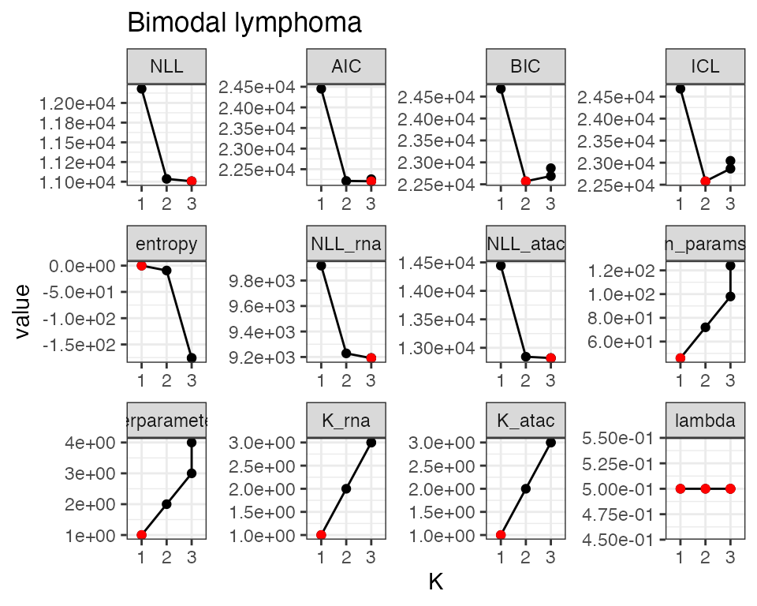

Setup the directory where results are stored.
sample = 'lymphoma'
prefix = paste0(sample, "/tutorial/")
out.dir = paste0(prefix, "/congas_data/")
fig.dir = paste0(prefix, "/congas_figures/")
if (!dir.exists(out.dir)) {dir.create(out.dir, recursive = T)}
if (!dir.exists(fig.dir)) {dir.create(fig.dir, recursive = T)}We load the object created in the previous Vignette .
data(multiome_congas_object) To reduce the paramter search space dimensions and subsequently decreasing the computational complecity of CONGAS+ inference, users can optionally decide to perform a preliminary step of segment filtering, which consists in running CONGAS+ inference independently on each segment, varying the number of clusters from 1 to 3 and finally keeping only those segments in which the otpimal number of clusters selected by BIC is higher than 1.
This step is implemented in the fuction
segments_selector_congas, which return the filtered CONGAS+
object.
Fitting uses reticulate to interface with the Python
CONGAS package, which implements the models in Pyro. In case R does not
find a anaconda environment with CONGAS+ python version installed, it
will automatically create a r-reticulate environment and install CONGAS+
within that environment.
filt = segments_selector_congas(multiome_congas_object)
#> Warning: replacing previous import 'cli::num_ansi_colors' by
#> 'crayon::num_ansi_colors' when loading 'easypar'
#> 6 segments are found polyclonal
# You can save the filtering result to avoid re-running the whole pipeline in future steps
# saveRDS(filt, paste0(out.dir, "rcongas_obj_filtered.rds"))Now we can run CONGAS+ parameters inference on the final filtered object. We first fir hyperparameters values from the current data, and then we fit the model.
# Set values fro the model hyperparameters
k = c(1:4)
binom_limits = c(40,1000)
model = "BIC"
lr = 0.01
temperature = 20#10
steps = 5000
lambda = 0.5
# Estimate hyperparameters
hyperparams_filt <- auto_config_run(filt, k,
prior_cn=c(0.2, 0.6, 0.1, 0.05, 0.05),
init_importance = 0.6, CUDA = FALSE)
#>
#> ── (R)CONGAS+ hyperparameters auto-config ──────────────────────────────────────
#>
#> ── ATAC modality ──
#>
#> → Negative Binomial likelihood, estimating Gamma shape and rate
#>
#> ── Estimating segment factors
#> → 1: chr18:0:18500000 theta_shape = 9.19898572042464, theta_rate = 0.134656196154735
#> → 2: chr18:18500000:80373285 theta_shape = 9.79787953384756, theta_rate = 0.0438621501984607
#> → 3: chr3:90900000:198295559 theta_shape = 9.17167289102107, theta_rate = 0.0155177176789159
#> → 4: chr7:0:60100000 theta_shape = 11.9716723078498, theta_rate = 0.0335830102341236
#> → 5: chr8:0:45200000 theta_shape = 14.1072176973478, theta_rate = 0.078127925166848
#> → 6: chr9:43000000:138394717 theta_shape = 12.6405354431144, theta_rate = 0.022602435565188
#>
#> ── RNA modality ──
#>
#> → Negative Binomial likelihood, estimating Gamma shape and rate
#>
#> ── Estimating segment factors
#> → 1: chr18:0:18500000 theta_shape = 5.11720455085432, theta_rate = 0.31999035300107
#> → 2: chr18:18500000:80373285 theta_shape = 13.5825852942828, theta_rate = 0.240347578487164
#> → 3: chr3:90900000:198295559 theta_shape = 14.326975650189, theta_rate = 0.0910771911618622
#> → 4: chr7:0:60100000 theta_shape = 13.1313284095014, theta_rate = 0.148145381976511
#> → 5: chr8:0:45200000 theta_shape = 14.9569403672792, theta_rate = 0.32911618174757
#> → 6: chr9:43000000:138394717 theta_shape = 15.3629122806536, theta_rate = 0.124101739386109
# Run
hyperparams_filt$binom_prior_limits = binom_limits
fit_filt <- Rcongas:::fit_congas(filt,
K = k,
lambdas = lambda,
learning_rate = lr,
steps = steps,
model_parameters = hyperparams_filt,
model_selection = model,
latent_variables = "G",
CUDA = FALSE,
temperature = temperature,
same_mixing = TRUE,
threshold = 0.001)
#> ✖ Warning ATAC 0-counts cells. 2 cells have no data in any of 6 segments, top 2 with missing data are:
#> ✖ Cell GTCCTAGAGCCAAATC-1-ATAC with 1 0-segments (17%)
#> ✖ Cell TCTCGCCCAAACATAG-1-ATAC with 1 0-segments (17%)
#>
#> ── (R)CONGAS+ Variational Inference ──────────────────────────────────────────
#>
#> ── Fit with k = 1 and lambda = 0.5.
#>
#> ── Fit with k = 2 and lambda = 0.5.
#>
#> ── Fit with k = 3 and lambda = 0.5.
#>
#> ── Fit with k = 4 and lambda = 0.5.
#>
#> ── (R)CONGAS+ fits completed in 3m 26.6s. ──
#>
#> ✖ Warning ATAC 0-counts cells. 2 cells have no data in any of 6 segments, top 2 with missing data are:
#> ✖ Cell GTCCTAGAGCCAAATC-1-ATAC with 1 0-segments (17%)
#> ✖ Cell TCTCGCCCAAACATAG-1-ATAC with 1 0-segments (17%)
#> ── [ (R)CONGAS+ ] Bimodal lymphoma ─────────────────────────────────────────────
#>
#> ── CNA segments (reference: GRCh38)
#> → Input 6 CNA segments, mean ploidy 2.
#>
#> | | | |
#>
#> Ploidy: 0 1 2 3 4 5 *
#>
#> ── Modalities
#> → RNA: 500 cells with 2321 mapped genes, 118808 non-zero values. Likelihood: Negative Binomial.
#> → ATAC: 500 cells with 16349 mapped peaks, 419489 non-zero values. Likelihood: Negative Binomial.
#>
#> ── Clusters: k = 2, lambda: l = 0.5, model with BIC = 26705.2.
#>
#> C1 | | | |
#> C2 | | | |
#>
#> RNA
#> C1 : ■■■■■■ n = 118
#> C2 : ■■■■■■■■■■■■■■■■■■■ n = 382
#> ATAC
#> C1 : ■■■■■■ n = 130
#> C2 : ■■■■■■■■■■■■■■■■■■ n = 370
#>
#> ── LOG ──
#>
#> - 2023-10-17 11:01:23.266875 Created input object.
#> - 2023-10-17 11:01:27.083726 Filtered s123egments: [0|50|50]The new object has more information.
fit_filt
#> ✖ Warning ATAC 0-counts cells. 2 cells have no data in any of 6 segments, top 2 with missing data are:
#> ✖ Cell GTCCTAGAGCCAAATC-1-ATAC with 1 0-segments (17%)
#> ✖ Cell TCTCGCCCAAACATAG-1-ATAC with 1 0-segments (17%)
#> ── [ (R)CONGAS+ ] Bimodal lymphoma ─────────────────────────────────────────────
#>
#> ── CNA segments (reference: GRCh38)
#> → Input 6 CNA segments, mean ploidy 2.
#>
#> | | | |
#>
#> Ploidy: 0 1 2 3 4 5 *
#>
#> ── Modalities
#> → RNA: 500 cells with 2321 mapped genes, 118808 non-zero values. Likelihood: Negative Binomial.
#> → ATAC: 500 cells with 16349 mapped peaks, 419489 non-zero values. Likelihood: Negative Binomial.
#>
#> ── Clusters: k = 2, lambda: l = 0.5, model with BIC = 26705.2.
#>
#> C1 | | | |
#> C2 | | | |
#>
#> RNA
#> C1 : ■■■■■■ n = 118
#> C2 : ■■■■■■■■■■■■■■■■■■■ n = 382
#> ATAC
#> C1 : ■■■■■■ n = 130
#> C2 : ■■■■■■■■■■■■■■■■■■ n = 370
#>
#> ── LOG ──
#>
#> - 2023-10-17 11:01:23.266875 Created input object.
#> - 2023-10-17 11:01:27.083726 Filtered s123egments: [0|50|50]You can get the information regarding model selection metrics
fit_filt$model_selection
#> # A tibble: 4 × 14
#> NLL AIC BIC ICL entropy NLL_rna NLL_atac n_params n_observations
#> <dbl> <dbl> <dbl> <dbl> <dbl> <dbl> <dbl> <dbl> <int>
#> 1 14223. 28557. 28826. 28826. 5.00e-8 11572. 16874. 55 1000
#> 2 13056. 26283. 26705. 26721. -1.53e+1 10879. 15232. 86 1000
#> 3 13055. 26343. 26917. 27149. -2.31e+2 10855. 15254. 117 1000
#> 4 13047. 26389. 27116. 27294. -1.78e+2 10846. 15248. 148 1000
#> # ℹ 5 more variables: hyperparameter_K <int>, K <int>, K_rna <int>,
#> # K_atac <int>, lambda <dbl>
Rcongas::plot_fit(fit_filt, what='scores')
plot_fit(fit_filt, 'posterior_CNA')
cowplot::plot_grid(
plotlist = plot_fit(fit_filt, what = 'density', highlights = TRUE),
ncol = 4)
#> → Plotting segments where different CNAs are present: chr18:18500000:80373285, chr3:90900000:198295559, chr7:0:60100000, and chr9:43000000:138394717.
#> → Normalising RNA counts using input normalisation factors.
#> → Normalising ATAC counts using input normalisation factors.
#> → Showing all segments (this plot can be large).
#> Joining with `by = join_by(cell)`
#> → Normalising ATAC counts using input normalisation factors.
#> → Normalising RNA counts using input normalisation factors.
#> Joining with `by = join_by(cluster, modality)`
#> Joining with `by = join_by(segment_id, cluster)`
#> Warning: The `<scale>` argument of `guides()` cannot be `FALSE`. Use "none" instead as
#> of ggplot2 3.3.4.
#> ℹ The deprecated feature was likely used in the Rcongas package.
#> Please report the issue to the authors.
#> This warning is displayed once every 8 hours.
#> Call `lifecycle::last_lifecycle_warnings()` to see where this warning was
#> generated.